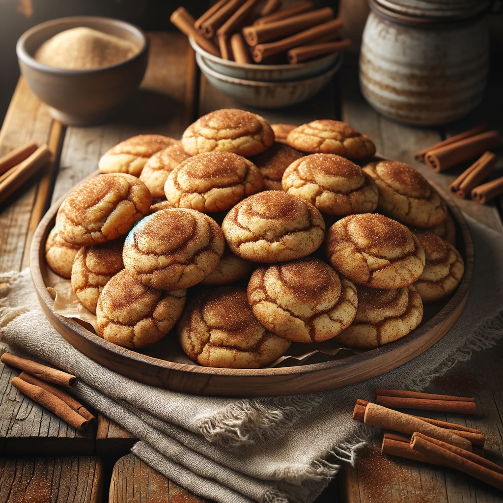

Snickerdoodle Cookies
Savor the nostalgic delight of homemade snickerdoodle cookies. Soft and chewy with a perfect balance of cinnamon
and sugar, these classic treats bring warmth and comfort with every bite. Perfect for any occasion, they promise
a satisfying sweetness that's hard to resist. Bake a batch and enjoy!
Preparation Time
Yields approximately 24 cookies
- Prep: 20 minutes
- Bake: 10-12 minutes per batch
- Total: 30-35 minutes
Ingredients
- 227 grams unsalted butter, softened
- 200 grams granulated sugar
- 50 grams packed brown sugar
- 2 large eggs
- 5 milliliters vanilla extract
- 300 grams all-purpose flour
- 5 grams cream of tartar
- 5 grams baking soda
- 3 grams salt
- 15 grams ground cinnamon
- 50 grams granulated sugar (for rolling)
Instructions
- Preheat the Oven: Preheat your oven to 350°F (175°C). Line two
baking sheets with parchment paper.
- Cream the Butter and Sugars: In a large bowl, use a wooden spoon or
spatula to cream the softened butter with 200 grams of granulated sugar and the brown sugar until the
mixture is light and fluffy. This may take a few minutes of vigorous mixing.
- Add Eggs and Vanilla: Beat in the eggs one at a time, ensuring each
egg is fully incorporated before adding the next. Stir in the vanilla extract.
- Combine Dry Ingredients: In a separate bowl, whisk together the
flour, cream of tartar, baking soda, and salt.
- Mix Dry and Wet Ingredients: Gradually add the dry ingredients to
the wet mixture, stirring until just combined.
- Prepare Cinnamon Sugar: In a small bowl, mix the 15 grams of ground
cinnamon with 50 grams of granulated sugar.
- Form and Coat the Dough: Using a spoon or cookie scoop, form dough
into small balls (about 1 inch in diameter). Roll each ball in the cinnamon sugar mixture until well coated.
- Arrange and Bake: Place the coated dough balls on the prepared
baking sheets, spacing them about 2 inches apart. Bake in the preheated oven for 10-12 minutes, or until the
edges are lightly golden. The centers will still look slightly underbaked, but they will firm up as they
cool.
- Cool: Allow the cookies to cool on the baking sheets for 5 minutes
before transferring them to a wire rack to cool completely.